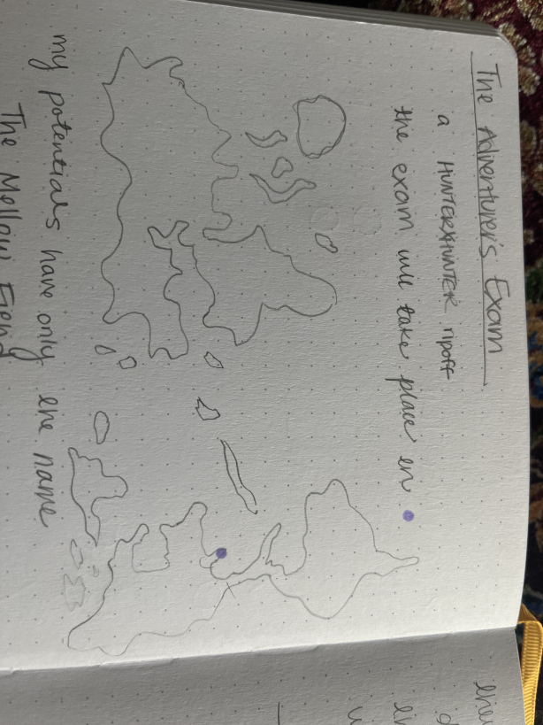
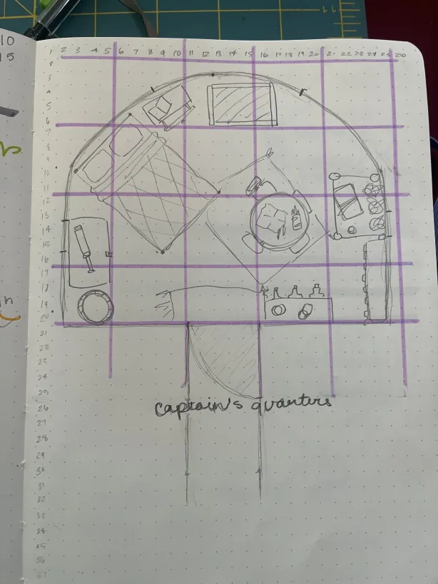

Sor World Map
Troya, Sports Arena
United City States (UCS)

Veigar Dungeon

Aglovale Dungeon
UCS Capitol, Heart

The Sardine, Captain's Quarters
Sor World Map
Troya, Sports Arena
United City States (UCS)
Veigar Dungeon
Aglovale Dungeon
UCS Capitol, Heart
The Sardine, Captain's Quarters
something is gonna go here uh huh uh huh trust
Return to Homepage.